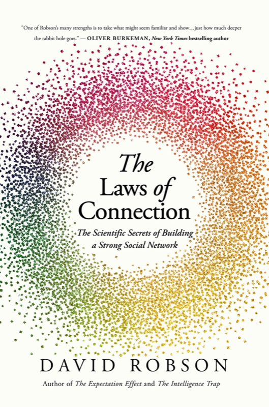

David Robson, a British science writer, was so shy as a teenager that he went tongue-tied with strangers, yet dreamed of becoming a journalist who interviews people for a living. He forced himself, step by step, past his fears and found people far kinder and keener than his intuitions had predicted. This is the book he wishes he'd had. Its central idea is shared reality: the sense that another person experiences the world the way you do. Robson gathers a decade of social-psychology research showing the many ways we misjudge each other (we think strangers won't want to talk, that people like us less than they do, that compliments will be awkward, that asking for help is a burden) and turns it into twelve “laws”, plus a thirteenth. He stresses that this is robust, often replicated research, not pop-psych one-offs.
Introduction
Helen Keller described her early deafblindness as captivity: a prisoner in her own mind until Anne Sullivan taught her to communicate by touch. Few of us know that kind of isolation, but most of us know smaller versions. Robson's way in is a finding by psychologists Erica Boothby and Gus Cooney, who chatted after a party and wondered whether everyone leaves conversations underestimating how much the other person enjoyed them. They tested it: pairs did a five-minute icebreaker, then rated each other. Almost everyone was too pessimistic. They called it the liking gap, and it's why we swap numbers and never call.
Chapter 1 · The social cure
In 1981 Yossi Ghinsberg, a 22-year-old Israeli backpacker, followed a con man into the Bolivian Amazon and ended up lost and alone for three weeks among jaguars, snakes and burrowing parasites. What nearly broke him was the loneliness. He had once dismissed the idea that “people need people”; today connection is at the centre of his life. C. S. Lewis, Robson says, was “precisely wrong” to write that friendship “has no survival value”.
Why? The body reads isolation as a threat and stays on alert: more inflammation, weaker immunity, higher blood pressure (people with more ties caught fewer colds when given a virus). Support buffers stress; even a photo of a loved one dampens fear and pain. And networks bring jobs, ideas and creativity.
Quality matters most. Rate someone in your life from 1 to 6 on two questions: How helpful is this person? How upsetting? High on both makes them ambivalent. In Holt-Lunstad's studies, blood pressure rose more when meeting an ambivalent tie than when meeting someone reliably unpleasant, and even knowing one was in the next room raised stress. Ambivalent ties are linked to faster cellular ageing. Robson's honest turn: he checked whether he was someone's frenemy (late replies, forgotten birthdays).
First lawBe consistent in your treatment of others. Avoid being a stressful frenemy.
Chapter 2 · How we connect
At 18, Sylvia Plath wrote at Smith College: “Life is loneliness.” She wasn't alone in a jungle; she just felt nobody saw the world as she did. That feeling, or its opposite, is shared reality, and it is about inner worlds, not CVs. Imagine a new colleague: you laugh at the same joke, cry at the same song, feel awe at the same painting, come from the same town, went to the same university. The first three matter far more.
Couples and friends who score high on Maya Rossignac-Milon's shared reality scale (“We often think of things at the exact same time”, “Events feel more real when we experience them together”) feel closer and more committed, and their identities overlap. Even disagreeing over how sweet a gummy sweet tastes dented it. Brain scans show it physically: Carolyn Parkinson found friends' brains responded so similarly to the same videos that neural overlap predicted who was friends with whom. Singing, dancing and moving in time (Durkheim's “collective effervescence”) build it fast: people who sang the Canadian anthem together cooperated more. And Arthur and Elaine Aron's research adds self-expansion: the best relationships help each person grow, as in Patti Smith's memories of building a life and a home with Fred Smith.
So: don't screen people on superficial checklists (Paul Eastwick found people's stated ideals don't predict whom they actually click with). Do new things together, move together, and validate the other person's perceptions.
Second lawCreate a mutual understanding with the people you meet. Ignore superficial similarities and instead focus on your internal worlds, and the peculiar ways that your thoughts and feelings coincide.
Chapter 3 · The personality myth
Mr Darcy claims he lacks the talent for conversing with strangers; Elizabeth Bennet replies that, like her piano playing, it needs practice. The science sides with Elizabeth.
Set specific goals with implementation intentions (“When I get to the coffee machine, I'll ask a colleague about their weekend”). Give catastrophising thoughts a reality check: How bad would that really be? What are the odds? How would I cope? Build self-compassion (Kristin Neff), for instance by writing yourself a kind letter, which actually helps you learn from mistakes better than self-criticism. And adopt a growth mindset about your social skills: people taught that the brain can change grow more confident.
Third lawTrust that others, on average, will like you as much as you like them, and be prepared to practise your social skills to build your social confidence.
Chapter 4 · Overcoming egocentric thinking
J. Edgar Hoover scrawled “Watch the borders” on a memo. Agents phoned Customs and Immigration about Mexico and Canada for days, too scared to ask what he meant. He meant the memo's margins were too narrow. Everyone assumed a shared frame of reference that didn't exist.
Our theory of mind is good, but under pressure we fall back on an automatic egocentric default and fail to correct it. Hence:
The fix isn't just imagining yourself in someone's shoes. Tal Eyal's studies found perspective-taking barely improved accuracy, and sometimes made it worse. What works is perspective-getting: ask, and listen to the answer. And be more forgiving when others misread you; your feelings weren't as obvious as you thought, so say them out loud.
Fourth lawCheck your assumptions; engage in ‘perspective-getting’ rather than ‘perspective-taking’ to avoid egocentric thinking and misunderstandings.
Chapter 5 · The art of conversation
Hazlitt's Law: “The art of conversation is the art of hearing as well as of being heard.” Asking questions makes people like you more, but Karen Huang found the type matters.
Show attention in your words, not just nods: refer back to the core of what they said. Don't phub (phone-snub). Well-timed interruptions that complete their thought or chime agreement (“Oh yeah, Radiohead are great”) actually build flow.
Arthur Aron paired strangers for 45 minutes. Half discussed small talk (“How did you celebrate last Halloween?”); half answered escalating personal questions, the famous “36 questions to fall in love” (“What would constitute a perfect day for you?”, “Do you have a secret hunch about how you will die?”, “Your house catches fire; what one item do you save?”). The deep-talk pairs felt as close as many people feel to their closest friends. Self-disclosure works across ethnic groups too, and releases natural opioids. We avoid it because we wrongly expect others to be bored by our inner lives. (For people from marginalised groups, Kiara Sanchez notes, such openness can be a “threatening opportunity”, so tact matters.)
Gus Cooney found people enjoy hearing about things they already know (a film they've seen) more than about novel experiences, because gaps in shared knowledge make stories hard to follow. That's why your amazing trip bores your friends. Choose shared terrain, or tell new experiences as a full, vivid narrative.
Fifth lawIn conversation, demonstrate active attention, engage in self-disclosure, and avoid the novelty penalty, to build mutual understanding and contribute to the merging of our minds.
Chapter 6 · Expressing appreciation
From Aesop's fox flattering the crow to Dante putting flatterers in a pit of excrement, we've been warned against honeyed words. But praise works like pay: the brain processes compliments like money; one factory found praise boosted output as much as cash bonuses. Yet 63% of Americans feel underappreciated most days.
Make it specific: describe what the person did and what it says about them, not just how it helped you. Avoid clichés and “positive stereotypes”. People with low self-esteem may reject praise that clashes with their self-image, so give detailed reasons. And don't forget weak ties.
Sixth lawPraise people generously, but be highly specific in your words of appreciation.
Chapter 7 · Truth, lies and secrets
Schopenhauer's porcupines huddle for warmth and prick each other, so they settle at a polite distance. Robson argues we should brave a bit more closeness.
Secrets weigh, literally. Robson, who is gay, describes the loneliness of keeping it hidden. People carrying a big secret judge hills steeper and distances longer, perform worse on mental tasks, and feel less supported. Disclosing, when you're ready, lightens the load.
On dating profiles, refusing to answer whether you'd ever hidden an STD was judged as harshly as admitting doing it “frequently”. Paltering, true statements that mislead (Clinton in 1998: “There is not a sexual relationship”, in the present tense, the affair being over), is judged like lying. And white lies aren't as kind as we think: in Emma Levine and Taya Cohen's study, people told to be completely honest for three days enjoyed it as much as those told to be kind, and found it more meaningful. We underestimate how much people want honest feedback. Skip the “feedback sandwich”; state good intentions, then be specific and constructive. Trusting people, it turns out, are better judges of who to trust.
Seventh lawBe open about your vulnerabilities, and value honesty over kindness (but practise both, if possible).
Chapter 8 · Avoiding envy and enjoying confelicity
“Just won GQ style award in Germany. Obviously they made a mistake” (Jared Leto). Humblebrags exist because we fear envy. But research shows:
The upside is confelicity (Nietzsche's Mitfreude, shared joy): when someone celebrates your good news, the joy grows and both of you feel closer. Yet 40% of people in one study wouldn't tell a close friend about a promotion for fear of seeming a braggart. Tell the story of the journey, including the struggles, which reads as authentic pride rather than hubris. And keep the conversation balanced: confelicity runs out if you stop paying attention to their life.
Eighth lawDo not fear envy. Disclose your successes but be accurate in your statements and avoid comparing yourself to others. Enjoy ‘confelicity’.
Chapter 9 · Asking for help
In 1736 a rival legislator opposed young Benjamin Franklin. Franklin asked to borrow a rare book from his library, returned it with a warm note, and “we became great friends, and our friendship continued to his death.”
Giving soothes our own stress system (the caregiving system overlaps with reward), so a request is partly a gift. Japanese psychologist Yu Niiya studies amae, presuming on someone's indulgence, like asking a busy roommate for help you could manage alone. Across Japan and the US, people felt warmer and closer after amae requests. But the flip side of our “underestimation of compliance” is that people struggle to say no, even to unethical requests. So ask, but give an easy out, acknowledge their other demands, say thank you, and make sure it's reciprocal.
Ninth lawAsk for help when you need it, in the expectation that your pleas for support can build a stronger long-term bond.
Chapter 10 · Healing bad feelings
In 1883 the philosopher William James wrote to his friend Grace Norton, deep in depression: “Sorrow comes in great waves … but it rolls over us, and though it may almost smother us it leaves us.” We're better comforters than we think: in James Dungan's studies, people underestimated how much their reaching out would be appreciated, especially by those who were struggling.
But the old “hydraulic” model, that venting releases pressure, is wrong. After 9/11 and the Virginia Tech shooting, people who talked endlessly about it didn't recover faster. Co-brooding, going round the same distress together, can deepen it. What helps is co-reflection, which still acknowledges the pain but looks for meaning. Children learn this from caregivers' “emotion coaching”, and adults can still learn it. Robson's two steps:
And let go: don't force it. “Autonomy-supportive” support means noticing a change, expressing concern, and offering flexibility on timing, topic and depth: “I can see you're upset, and I'm available to talk whenever you like.” The paradox of compassion: caring for others' pain tends to raise, not drain, your own wellbeing. Norton held on, and the two stayed close confidants until James's death.
Tenth lawOffer emotional support to those in need, but do not force it upon them. Validate their feelings while providing an alternative perspective on their problems.
Chapter 11 · Constructive disagreement
Antonin Scalia and Ruth Bader Ginsburg disagreed on almost everything in law and were “best buddies”: shared New Year's Eves, opera, a photo together on an elephant. “I attack ideas. I don't attack people,” Scalia said. When he sent her 24 roses for her birthday, a colleague asked what good it had done him with her votes. “Some things are more important than votes.” Meanwhile about 40% of US voters have no close friend on the other side.
Asch's famous conformity experiment looks different through this lens: people who went along with the group weren't weak; disagreement shattered their sense of shared reality, and one ally was enough to free them. Elizabeth Pinel shows that people feeling existentially isolated drift to extreme groups. Mock your cousin's flat-Earth beliefs and you push him further towards the people who “get” him.
Eleventh lawBe civil and curious in disagreements; show interest in the other side's viewpoint; share personal experiences; and translate your opinions into their moral language.
Chapter 12 · Finding forgiveness
In 1976, Saturday Night Live offered the Beatles $3,000 to reunite on air. Lennon and McCartney were watching together, a couple of miles away, and nearly went. By then the bitterness had faded; McCartney later said “the main bit was the affection.”
Grudges have a function (we're not doormats), but revenge leaves us feeling dehumanised. Karina Schumann and Gregory Walton had people write either a revenge letter or a forgiveness letter to someone who'd hurt them; forgiving restored their own sense of humanity and moral self. (Robson's workplace voodoo doll gets a cameo: an Ig Nobel-winning study found stabbing one eased resentment of an abusive boss.) Forgiveness is linked to better mental and physical health and can be learned: Everett Worthington's REACH programme, tested on nearly 5,000 people across several countries, raised forgiveness and lowered depression and anxiety. Worthington forgave the teenager who murdered his mother.
Zoom out. Couples taught to view their arguments for seven minutes, three times a year, from the perspective of “a neutral third party who wants the best for all involved” stopped the usual decline in their relationship quality. Affirming your core values first (ranking eleven values and writing about the top one) makes it easier to admit fault.
We overestimate how humiliating apologising will be and underestimate how much it helps. Robson's list of what researchers find in effective apologies. The more you include, the more sincere it reads; the most important are marked ★.
Twelfth lawFor your wellbeing, choose forgiveness over spite. Look at the big picture in arguments. Ensure your apologies define the offence, take responsibility for your actions, and express regret. Have faith that people can change for the better.
Conclusion · The thirteenth law
Thirty years after they met, Helen Keller wrote to Anne Sullivan about her “soul-birthday”, the day Sullivan arrived “and opened life's shut portals”. Robson wishes we celebrated friendships the way we do wedding anniversaries.
Peggy Liu's studies: people who sent a short “just thinking of you” note to someone they'd lost touch with badly underestimated how welcome it was. Recipients rated it 6.2 out of 7, weak ties most of all. On technology: social media and video calls can strengthen bonds if used to communicate actively rather than scroll passively. Face to face beats voice, voice beats text, but any genuine contact beats none. His closing nudge: think of three people who mean something to you, and tell them.
Thirteenth lawReach out to the people who are missing in your life. Let them know that they are still a part of your thoughts.
Pocket version